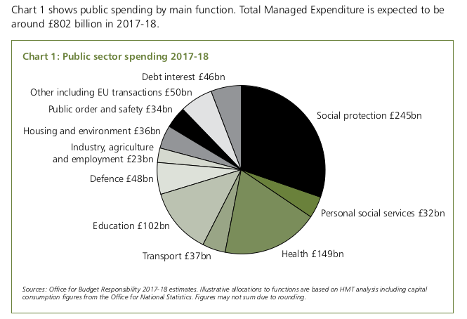
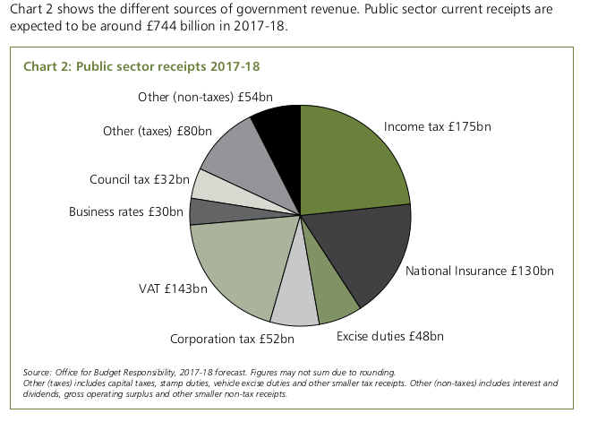

Radical devolution¶
The cry of the American revolutionaries was no taxation without representation.
This equation also works the other way around. You cannot have real government without the ability for it to finance itself.
Relying on a block grant from national government means local bodies are not governments, they are just managers following nationally decided policies.
It is time to devolve the mundane parts of HMRC, namely Income Tax and Corporation Tax, down to local governments along with Education, Health and out of work benefits.
This is already happening slowly in Scotland and Northern Ireland. It should be extended to the whole of the UK.
Abolish National insurance¶
The national insurance tax has increasingly lost any relation to benefits gained from it, it should just be combined with income tax for a more transparent system.
Abolish Borrowing¶
Local governments should not be allowed to borrow. The national government should take on all existing debt and monetise it away as far as possible by creating money and buying back the debt.
No level of government should take on new debt, except in times of existential war.
An important part of creativity and innovation depends on doing more with less, this requires a fixed budget, not constantly resorting to budget increases.
Business rates¶
Local government keeps the tax on houses (‘Council Tax’) and we are slowly moving towards the situation where local government can keep 100% of the business rates that they raise locally.
This is good and bad. It is good as it rewards local governments for increasing the health of local business.
However, business rates are a fairly stupid form of tax, it is not a tax on business profits but a tax on the buildings that businesses use. It leads to empty shops, abandoned warehouses and the rateable value of a business building may have no relation to the profit that can be made from it. Killing off jobs for no good reason.
Business rates are already far too high. At the moment, since this will be the main lever that local government has control over, there will be even more perverse incentives to overuse it. Removing capital from productive businesses to non-productive uses and shrinking local GDP.
Income and Corporation Tax to councils¶
Local government should control the main taxes namely Income tax and Corporation Tax so they can calibrate their revenue and spending in a way which grows local GDP.
They can also then experiment with services and best practice can be copied.
The existing council tax is quite regressive, local councils can experiment with better systems of land taxation.
Devolve services¶
The NHS is already quite devolved into local trusts who have the power but also club together nationally for buying drugs etc. Local governments just have to raise and hand over the money, as well as appointing and holding to account the local NHS chief.
Education is mostly controlled by headmasters with local governments providing services to the schools. Losing the national department of education will change pretty much nothing.
Local governments can invent their own benefit schemes to get people back into work and to care for those who cannot work.
Industry subsidies and local infrastructure also can be better planned locally.
National funding¶
When you look at a list of what the Westminster government spends money on (from the budget), there is very little which couldn’t be done at a more local level.
The three main things we need the national government to do is defence, intelligence and paying back the deficit.
| Expenditure | Cost |
|---|---|
| Defence | £50 billion |
| Intelligence Agencies etc | £2.5 billion |
| Debt interest and repayment | £50 billion |
| Pensions | £160 billion |
Defence funding could actually be hypothecated to some extent to give local areas some civic pride e.g. Birmingham funded that aircraft carrier and Norwich funded that regiment etc.
Promised (but totally unfunded) entitlements to pensioners are the biggest item in the budget - £160 billion per year on the state pension alone.
It is pretty hard to regionalise these built up entitlements. Pensioners often work in the city then retire to the countryside or seaside.
This is a pyramid scheme and this system is going to have to be unwound but that is a massive topic for another article. For now let’s just leave it with the Westminister government.
National budget¶
Therefore, it should be possible to set a national government budget of about £262.5 billion or so.
Here again is a budget pie chart.
On the income side, sin taxes (excise duties), customs duties, airline passenger duties and lots of other bits and bobs that would be hard to devolve, we are talking about £182 billion or so and VAT raises £143 billion. This gives a total national government revenue of £325 billion.
That leaves £62.5 billion in revenue. Some would need to be used for regional subsidies, but there should be a little less VAT collected.
Abolish VAT on essential goods¶
Originally, VAT was a sales tax on luxury goods like yachts not on basic forms of transport like bicycles or basic clothing. The EU required it to be put on lots of goods, we should abolish it on all essential goods and return it to being a luxury tax.
This would directly help the poor by not taking money away from the poor.
Here are some of the goods which should be exempted from VAT.
| Essential | Current Rate |
|---|---|
| Umbrellas and rainproof coats | 20% |
| Underwear | 20% |
| Bicycles | 20% |
| Hot drinks | 20% |
| Cooked Food (perhaps with a cap) | 20% |
| Energy saving materials | 5% |
| Mobility aids for the elderly | 5% |
| Women’s sanitary products | 5% |
| Home heating equipment | 5% |
| Educational computers for home use | 20% |
Abolish the licence fee¶
In the age of the web, a tax on old fashioned television sets makes very little sense. A quarter of the BBC’s income comes from commercial activity, this can be increased. Digital subscriptions can be collected for popular programs watched online.
The BBC World Service is pretty tiny part of the BBC, already paid for the foreign office.
The rest can be made up by local governments, who can give the BBC grant for the programmes made and activities performed within their area. We can trust the BBC and the local governments to decide among themselves how much to pay.
Not having a licence fee will mean it will stop needing to justify audience numbers and the BBC can get back to its role as an incubator of new technologies and programs.
Programs that have established an audience should be sold to commercial television stations, freeing up more money for seeding new programs.
The BBC shouldn’t bid against commercial television for programs such as sporting events and imported American programs. If they are already commercially viable, leave it to the commercial stations.